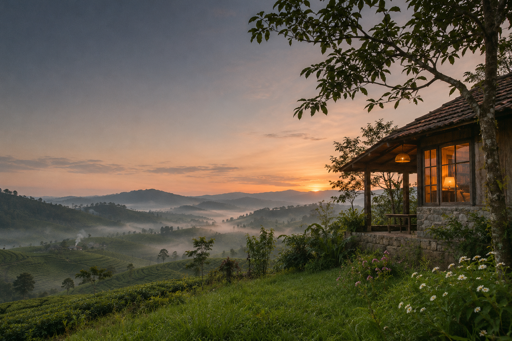

05:30 BUỔI SỚM
Đón bình minh
Thức dậy cùng trời trong, nhìn mây lững thững qua những ngọn đồi.
01

MỘT KHOẢNG TRỜI ĐỂ Ở LẠI
Có những buổi sớm, chỉ cần mở cửa là thấy cao nguyên đang thức dậy trong sương.
Bắt đầu chuyến điNƠI CAO NGUYÊN GẶP MÂY
Chạm Mây bắt đầu từ một điều rất giản dị: dành cho mình một buổi sáng không cần vội.
Ở cao nguyên Bảo Lộc, sương ghé qua những triền đồi, nắng lên thật khẽ và ngày mới mở ra theo cách riêng. Chạm Mây là lời mời bước ra ngoài nhịp quen thuộc, để nhìn trời rộng hơn và nghe mình rõ hơn.
Đi qua một ngày ở Chạm MâyKHÔNG CẦN LỊCH TRÌNH DÀY
Thử tưởng tượng một ngày bắt đầu bằng sương, rồi khép lại bằng ánh đèn ấm và câu chuyện chưa muốn dừng.
Thức dậy cùng trời trong, nhìn mây lững thững qua những ngọn đồi.
Nhấp một ngụm ấm, ngồi lâu thêm một chút và chẳng cần xem đồng hồ.
Ngắm màu trời đổi sắc, gom vài khoảnh khắc nhỏ vào cuốn album của chuyến đi.
Khép ngày chậm rãi bên những người mình thương, giữa không khí mát lành của cao nguyên.
Gợi ý trải nghiệm trong bản demo · lịch trình thực tế sẽ tùy ngày lưu trú.
MỘT CHÚT XANH, MỘT CHÚT SƯƠNG
Một vài nét phác thảo cho cảm giác mà Chạm Mây muốn giữ lại: thoáng đãng, dịu mắt và gần với trời đất.
Đi xa đôi khi chỉ để tìm lại một nhịp sống vừa với mình.
CHẠM MÂY · BẢO LỘCẢnh concept minh họa, không phải ảnh chụp thực tế homestay.
HẸN MỘT BUỔI SỚM MAI
Một chuyến đi bắt đầu từ mong muốn được nghỉ ngơi. Chạm Mây sẽ cập nhật thông tin phòng và kênh đặt chỗ tại đây.